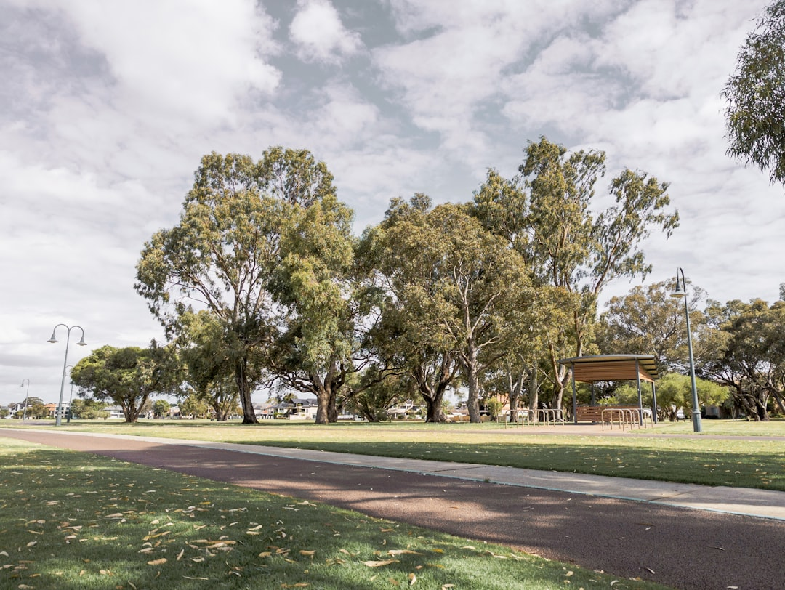

For Perth retaining wall work, the core decision is material, drainage and approval risk. The published source identifies two common local systems, limestone block and post and panel, and notes that a building permit is generally needed once a wall retains more than 0.5 metres of ground. Walls on boundaries, tied to other building work, affecting adjoining land or carrying surcharge may also need engineering and local government approval.
For homeowners comparing retaining wall builders perth options, the useful starting point is not a suburb list, but the wall type, site condition, drainage detail and approval pathway.
Retaining Wall Builders Perth Explained
Retaining Wall Perth frames the first decision around two systems that appear often across Perth work, limestone block and post and panel walls. That is a practical split because the choice affects appearance, access, engineering, drainage and how confidently a builder can price the job from site details.
Useful quote notes include the approximate retained height, whether the wall is on or near a boundary, what sits above it, and whether an existing wall is leaning, bulging or cracked. The source page also asks for suburb or postcode because local terrain can affect the conversation, from sandy Swan Coastal Plain blocks to steeper hills sites.
- Measure the retained height rather than the visible face only.
- Note fences, driveways, buildings or filled ground near the wall.
- Photograph drainage outlets, cracking, bulging and the toe of the wall.
- Ask whether the quote includes drainage, engineering and permit steps.
Material Choice Without Guesswork
Limestone block is described as a common fit for Perth's sandy, limestone-backed geology and local streetscape. It can suit owners who want a wall that looks settled in the landscape, although the final choice still depends on height, access and engineering requirements.
Post and panel, also called twin-side retaining in the source material, uses posts with precast concrete panels slotted between them. It is presented as a fast, consistent-finish system used for boundary and driveway retaining. That makes it worth asking how the posts will be founded, what finish is visible on each side, and how drainage will be handled behind the panels.
Other systems in the source are more situational. Timber sleeper walls are positioned for garden-scale terracing and low boundary retaining. Rock and boulder walls are linked to hills blocks and granite-outcropped sites. Core-filled besser block is described as an option for taller engineered structural walls and rendered finishes.
Permit And Engineering Triggers
The clearest number in the supplied material is the 0.5 metre retaining height threshold. A building permit from local government is generally needed once a wall retains more than that amount of ground, and the source notes that a wall of any height can need approval if it is tied to other building work, affects or protects adjoining land, or affects a boundary wall or dividing fence.
Tiered walls need extra care. The source states that some councils, including Wanneroo and Melville, count the combined height of tiered walls toward the 0.5 metre figure. That makes it important to ask the local government how it will assess the whole arrangement, not only each individual section.
For engineered walls, the source refers to AS 4678 and WA-registered building engineering practitioners. A homeowner does not need to solve the engineering before making an enquiry, but should ask who is responsible for the design, drawings, permit submission and any changes requested by council.
Drainage And Repair Clues
Drainage is not a decorative extra in the source material. It lists ag-drain, gravel and geofabric behind walls as the structural detail intended to reduce failures in Perth's winter-saturated sandy ground. When comparing quotes, a line item for the wall face alone is incomplete if the drainage system is not explained.
Repair work needs diagnosis before price. The source separates a leaning timber sleeper section from a bulging block wall that may need partial demolition and rebuild. That distinction is useful for owners because the visible defect may be only the symptom. Footing condition, material condition and drainage behind the wall all affect whether repair or replacement is realistic.
A practical question for any damaged wall is whether the builder is quoting to restore the failed section, rebuild it in the same material, or replace it with another system. For a broader introductory guide on the related topic, see this retaining wall Perth planning overview.
Who This Applies To
This guide is most useful for Perth metro homeowners, renovators and property owners working out whether a new or existing retaining wall needs a simple material quote, an engineered design, local government approval or a repair assessment. It also helps when the wall sits near a driveway, boundary, fence or adjoining land.
It is less useful for owners seeking a fixed price from a few photos alone. The source page does not publish standard prices, and the relevant inputs vary by material, retained height, drainage, footing condition, access and compliance pathway. A better brief gives the builder enough site context to say what must be checked before a final quote can be relied on.
- Start with wall height, location and photos.
- Identify whether it is new work, repair or replacement.
- Ask about material suitability, drainage and approvals together.
- Document the site. Record retained height, boundary position, nearby loads, access limits and visible defects before asking for a quote.
- Choose a likely system. Use limestone, post and panel, timber, rock or besser block as a starting point, then test that choice against height, terrain and engineering needs.
- Check approval exposure. Ask local government or the builder whether the 0.5 metre threshold, boundary effects, tiering or surcharge changes the permit pathway.
- Confirm drainage scope. Make sure the quote explains ag-drain, gravel, geofabric or other drainage details rather than treating the wall face as the whole job.
- Separate repair from replacement. For failed walls, ask whether the proposed work addresses drainage, footing condition and material condition as well as the visible damage.
| Option | Best fit from supplied source | Questions to ask |
|---|---|---|
| Limestone block | Sandy, limestone-backed Perth blocks and local streetscape fit | Is it suitable for the retained height, access and desired finish? |
| Post and panel | Boundary and driveway retaining where a consistent finish is preferred | What posts, panels, footing detail and drainage are included? |
| Besser block | Taller engineered structural walls and rendered finishes | Who handles engineering, reinforcement detail and permit documentation? |
Common questions
Do Perth retaining walls always need council approval? No. The supplied source says a permit is generally needed once a wall retains more than 0.5 metres of ground, but walls below that can still need approval if they affect boundaries, adjoining land, fences or other building work.
Which material is most common for Perth retaining walls? The source highlights limestone block and post and panel as the two systems Perth commonly builds with. The better choice depends on the site, height, finish, access, drainage and approval requirements.
Can a damaged retaining wall be repaired instead of replaced? Sometimes, but the source says repair cost depends on the failure mode. A leaning timber sleeper section is different from a bulging block wall, so assessment of drainage, footing and material condition comes first.
What should be included in a retaining wall quote? Ask for the wall system, retained height assumptions, drainage detail, engineering responsibility and permit responsibility. The supplied source specifically points to drainage, AS 4678 design and local government permits as important project issues.
This guide covers practical material, drainage, repair and approval questions for Perth retaining wall projects.